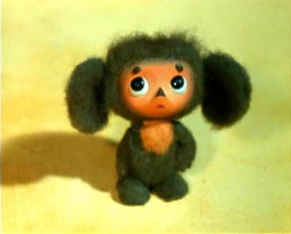
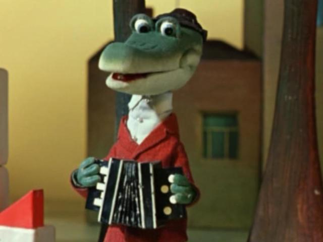
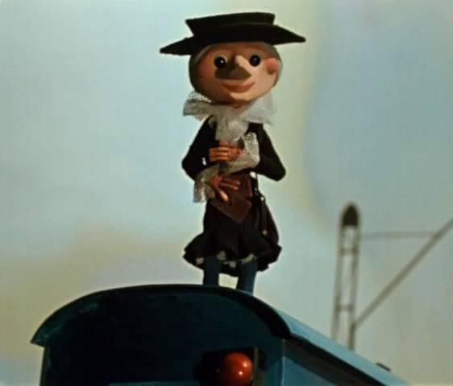

Кто такой Чебурашка?

Чебурашка — персонаж книги Эдуарда Успенского «Крокодил Гена и его друзья» и фильма Романа Качанова
«Крокодил Гена», снятого по этой книге в 1969 году. Широкую известность получил после выхода этого фильма на
экраны.
Внешне представляет собой существо с огромными ушами, большими глазами и коричневой шерстью, ходящее на
задних лапах. Известный сегодня образ Чебурашки впервые появился в мультфильме Романа Качанова «Крокодил
Гена» (1969) и был создан при непосредственном участии художника-постановщика фильма Леонида Шварцмана.
После выхода фильма на английский язык первоначально переводился как «Topple» (Топл), на немецкий как
«Kullerchen» (Куллерьхень)[Kullerchen und seine Freunde, Лейпциг, 1974] и «Plumps» (Плумпс)[Перевод книги на
немецкой язык: Krokodil Gena und seine Freunde, Берлин, 1988], на шведский как «Drutten» (Дрюттэн) а на
финский как «Muksis» (Муксис).
Другие персонажи мультфильма
Крокодил Гена

Старуха Шапокляк
 Старуха Шапокляк, названная в честь старомодного головного убора — главный антагонист Чебурашки и Гены. Согласно книге, её основное занятие — «собирать злы», в мультфильме её девиз выражен в песенке: «Кто людям помогает — тот тратит время зря. Хорошими делами прославиться нельзя». Старуха Шапокляк при поддержке живущей в её ридикюле крысы Лариски устраивает жестокие розыгрыши над невинными жителями города. По мере знакомства с Геной и Чебурашкой Старуха Шапокляк постепенно встаёт на путь исправления, обычно возвращаясь к хулиганству в начале следующего выпуска мультфильма. Интересно происхождение этого персонажа. В одном из интервью Э. Н. Успенский признался, что прототипом Старухи Шапокляк стала первая жена писателя, а художник Леонид Шварцман, придумавший внешний вид мультипликационных персонажей, по собственному признанию, отчасти «срисовал» Старуху Шапокляк со своей тёщи. Цикл мультфильмов о Чебурашке и Крокодиле Гене имеет своего отрицательного героя – Старуху Шапокляк. Она получила такое имя из-за неизменной шляпы шапокляк, которая хорошо сочетается со всем старомодным обликом героини. Кроме шляпы, старуха обычно носит строгий костюм, кружевные воротнички, зонт-трость и сумочку- ридикюль. Сумочка – едва ли не самое важное, что у нее есть, потому что в ней помещается крыса Лариска – поначалу единственный друг и верный спутник старухи. Старуха Шапокляк специализируется на пакостях, кознях и интригах. Она направляет свою неуемную энергию против всякого доброго дела, поэтому очень нуждается в помощи Лариски. Ведь практически все боятся крыс и разбегаются при их появлении. Пользуясь этим, она устраивает злые розыгрыши над жителями городка. Несмотря на свой преклонный возраст, она переворачивает мусорные урны, обливает людей водой и даже стреляет из рогатки. И музыкальная тема этого персонажа – провозглашение принципа, что «хорошими делами прославиться нельзя». Занимается Старуха Шапокляк тем, что собирает злы (то есть "злые дела"), но не потому что она злая или вредная. Просто Старуха Шапокляк хочет прославиться и думает, что хорошими делами этого сделать нельзя. Поэтому она стреляет из рогатки по голубям, выливает на прохожих воду из ведра, переворачивает мусорные урны , пугает всех крысой Лариской, переходит улицу в неположенном месте и за это она состоит на учете в "Отделе милиции по надзору за расшалившимися пенсионерами". На самом деле Старуха Шапокляк в глубине души справедливая и социально-активная старушка, а хулиганила она потому, что ей было скучно и кроме Лариски у нее тоже не было настоящих друзей, ну а какой настоящий друг может быть из крысы. После того как Старуха Шапокляк познакомилась с Чебурашкой и Геной она изменилась в лучшую сторону: вместо ведра она обливает прохожих из небольшой вазочки, подкладывает на стулья не кнопки, а клей, и даже идёт учиться в школу. Конечно же она училась в детстве в школе, но решила сходить туда еще раз за компанию с Чебурашкой. Кроме того в школе столько интересных возможностей повеселиться! Если раньше Старуха Шапокляк не могла прожить день, чтобы не сделать пять пакостей, то теперь эта бойкая старушка является грозой всех браконьеров, безбилетников, работников-халтурщиков и лентяев. А если и сделают они с Лариской какую-нибудь мелкую и хитрую пакость, то только чтобы вспомнить старые времена и если ...ну о-о-очень хочется. Под влиянием новых друзей Старуха Шапокляк становится добрее, хотя время от времени возвращается к старым привычкам. Постепенно она учится направлять свою энергию в положительное русло: успешно борется с хулиганами, безбилетниками, браконьерами и прочими нарушителями порядка.